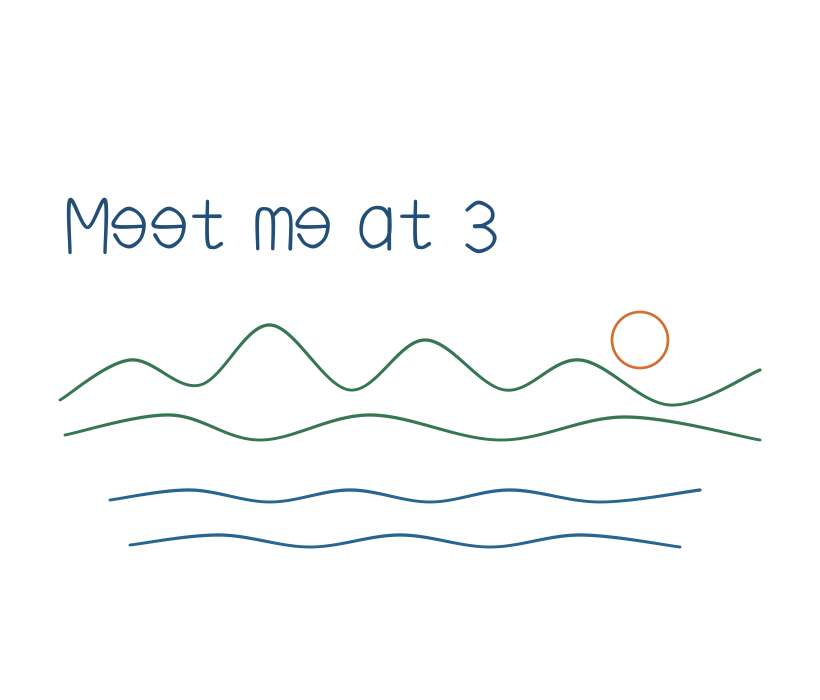

Kalem çizgileri sayfada mürekkep olarak kalır. Kısa bir not yazın, sonra yanına bir eskiz çizin. Bir çizgiyi taşımak ya da boyutunu değiştirmek için Seç'i, birkaç çizgiyi birden almak için Kement seçimi'ni, son işareti geri almak için Çizgiyi geri al'ı kullanın.
Bu not ve eskiz kalemle çizildi. Yazılmış harfler ya da düz bir resim değil, düzenlenebilir çizgilerdir.
Geri: Şekiller.
Bu sayfa bir yapay zekâ modeli tarafından çevrildi. Düzeltmeler memnuniyetle karşılanır.
